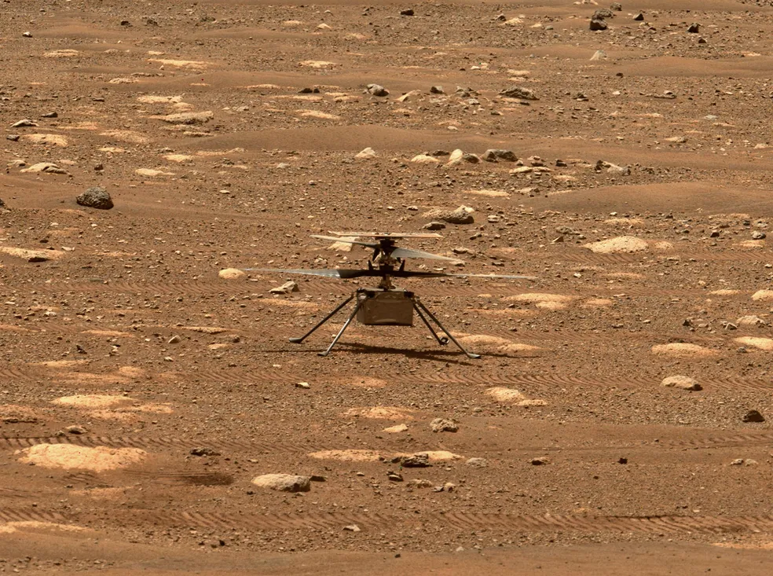

Helicóptero da Nasa entra para o 'Guiness World Records' por voo mais longo em Marte
Voo motorizado e controlado percorreu 704 metros na superfície marciana e foi realizado em abril de 2022. Na mesma data, Ingenuity também quebrou recordes de velocidade no solo e de duração de voo.

Foto mostra o helicóptero Ingenuity, da Nasa, destravando as pás do rotor, permitindo que girassem livremente, em 7 de abril. — Foto: Nasa
O mini-helicóptero Ingenuity, da Nasa, entrou para o "Guinness World Records" com o voo mais longo realizado na superfície marciana.
Em 2021, o Ingenuity fez o histórico primeiro voo motorizado e controlado no planeta vermelho, como parte de uma estratégia da agência espacial americana apenas para avaliar as condições de voo no planeta.
O mesmo se assemelha a um drone, pesa 1,8kg e chegou a Marte dobrado e acoplado à parte inferior do Perseverance, robô da Nasa que pousou no planeta em fevereiro de 2021.
Um ano depois, em 8 de abril de 2022, o Ingenuity estabeleceu vários recordes com seu 25º voo, quando percorreu 704 metros pela cratera Jezero. Oficialmente, segundo o Guinness, esse foi o voo mais distante em Marte até o momento.
Atmosfera extremamente difícil de sobrevoar
Vídeo mostra o helicóptero Ingenuity, da Nasa, fazendo um teste de rotação lenta de suas hélices no dia 8 de abril. A imagem foi feita pelo robô Perseverance, também da Nasa. — Vídeo: Nasa
O feito é impressionante porque a superfície marciana é extremamente difícil de sobrevoar. A atmosfera do planeta é fina, sendo composta por 95% de dióxido de carbono com pouco oxigênio.
Marte tem uma pressão de apenas 610 pascais (0,006% da pressão atmosférica típica da Terra), tornando os rotores de aeronaves e as asas elevatórias muito menos eficazes.
Para conseguir voar em Marte, o Ingenuity foi projetado de forma diferente dos helicópteros baseados na Terra. Ele é levantado por um par de rotores de fibra de carbono em contra-rotação, cada um com um diâmetro de 1,2 m e gira a cerca de 2.400 rpm, o que é cerca de cinco vezes a velocidade de um helicóptero comum.